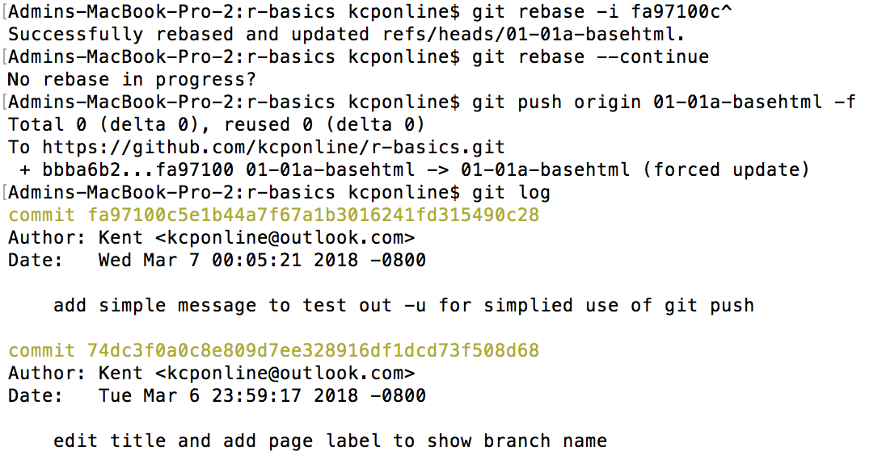
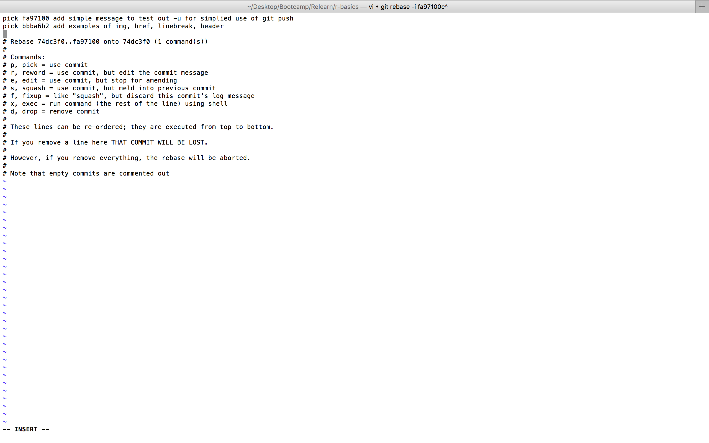

image with img src (h2 tag)
image with img src (h2 tag)
Note, in vim editor, move the blinking cursor to the line which is to be deleted and then enter "d" twice to clear the line which means the commit as stated by that line will be deleted. Then to finish, enter ":wq" and press enter. ":wq" means to save and exit and is required. However if a mistake is made and you wish to redo the vim editor, then use ":q!" to exit w/o saving.
image with img src (h2 tag)
image with img src (h2 tag)

hyperlink with a href (h2 tag)
target="_blank" opens a new tabhyperlink with a href (h2 tag)
href="#" makes a placeholder link and goes no whereordered list - class="listsample" (h2 tag)
- item 1
- item 2
- item 3
- item 4
unordered list - class="listsample" (h2 tag)
- item 1
- item 2
- item 3
- item 4
table (h2 tag)
| animal class | animal name |
| mammal | hyena |
| reptile | iguana |
| mammal | chimpanzee |
| bird | eagle |